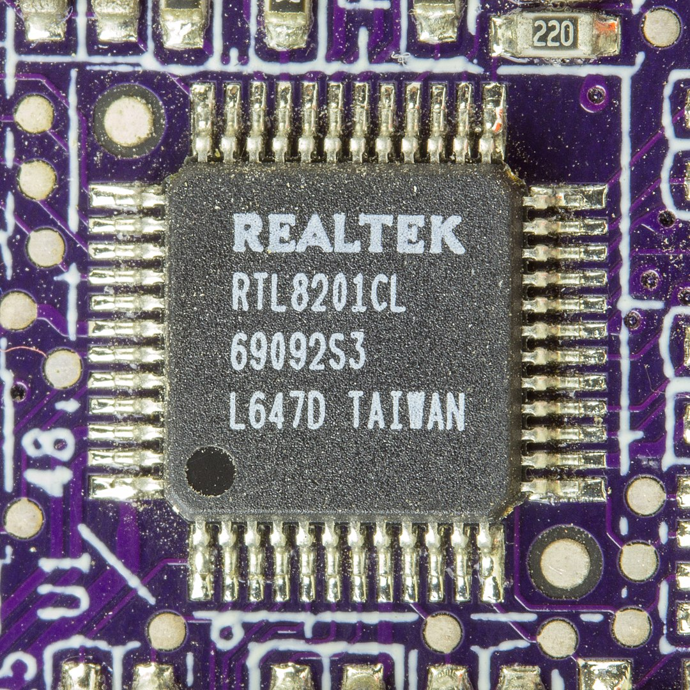
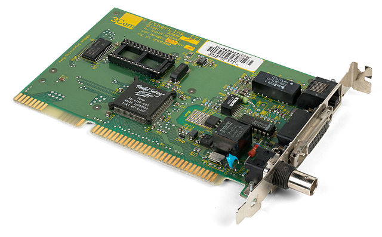
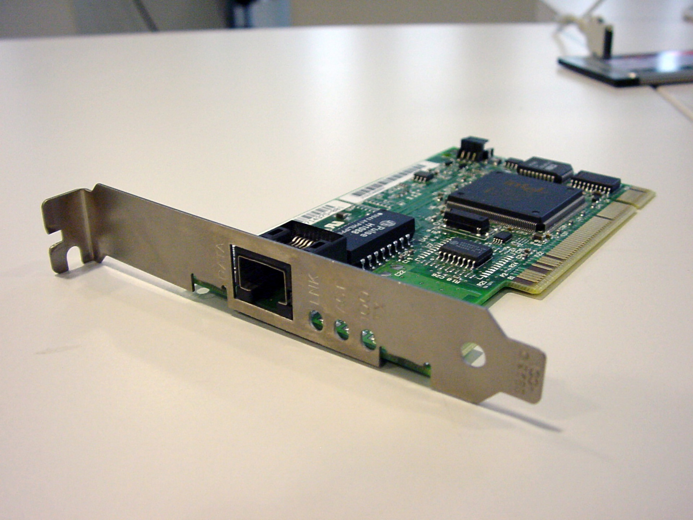
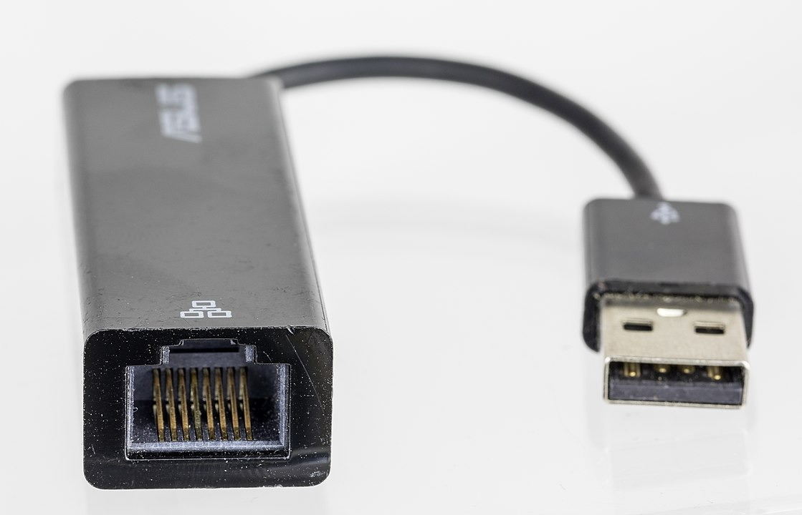
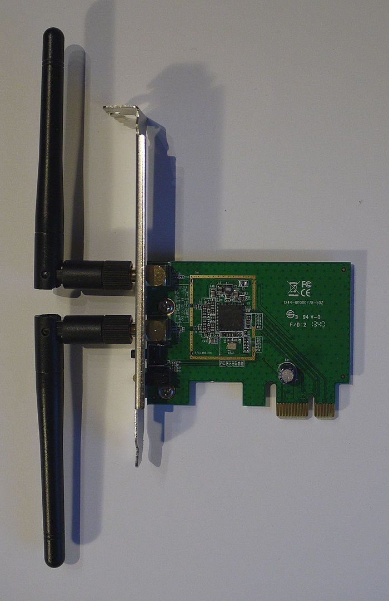
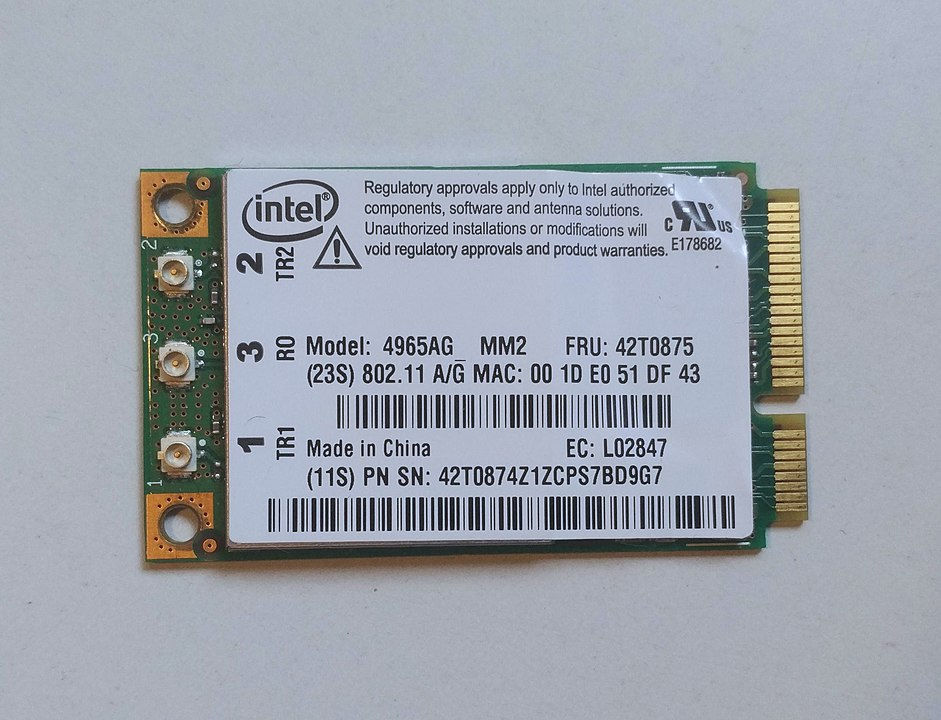
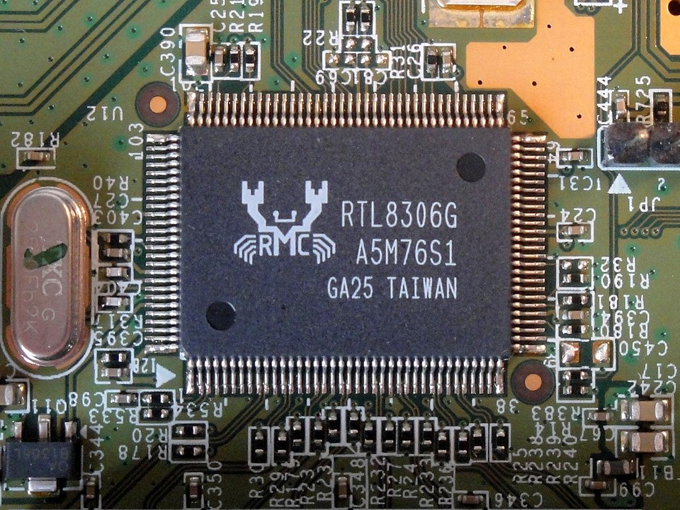
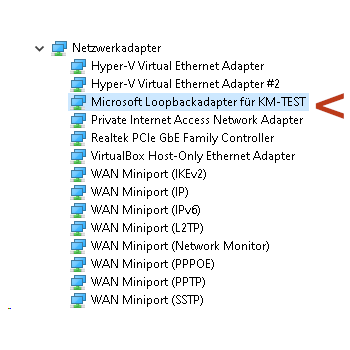
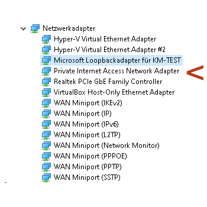
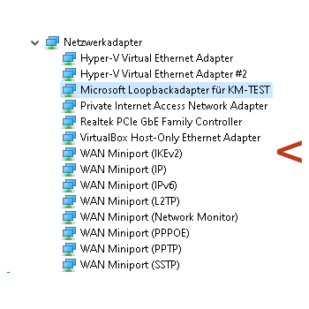

ITT-Netzwerk

Abbildung 1: Von © Raimond Spekking / CC BY-SA 4.0
Physikalische Netzwerkschnittstellen sind Hardwarekomponenten, die

Abbildung 2: By Dmitry Nosachev - Own work, CC BY-SA 4.0

Abbildung 3: (C) Christian Hart, Public Domain

Abbildung 4: Von © Raimond Spekking / CC BY-SA 4.0

Abbildung 5: By Markus Säynevirta, CC BY-SA 4.0

Abbildung 6: By Sadenäyttely - Own work, CC BY-SA 4.0

Abbildung 7: By Reise Reise - Own work, CC BY-SA 4.0
Eine Alternative zum Ethernet über CAT-Kabel ist das Ethernet over USB Protokoll, dass es erlaubt eine Ethernetverbindung über ein USB-Kabel aufzubauen, was bei den hohen Geschwindigkeiten von USB 4 (bis 40 Gbs) vor allem für Peer-to-Peer-Verbindungen über kurze Entfernungen eine Alternative ist.
Diese Funktionalität ist zum Beispiel in den Linuxkernel eingebaut.
Neben den Physischen gibt es auch verschiedene Arten von Virtuellen Netzwerkschnittstellen. Sie werden auf Betriebssystemebene vom Kernel bereitgestellt.
ip link show
1: lo: <LOOPBACK,UP,LOWER_UP> ~~~ 2: ens1f1: <BROADCAST,MULTICAST,UP,LOWER_UP> ~~~ 3: wlp1s0: <BROADCAST,MULTICAST,UP,LOWER_UP> ~~~ 4: virbr0: <NO-CARRIER,BROADCAST,MULTICAST,UP> ~~~ 5: cni-podman0: <BROADCAST,MULTICAST,UP,LOWER_UP> ~~~ 6: veth171e7929@if3: <BROADCAST,MULTICAST,UP,LOWER_UP> ~~~ 7: docker0: <NO-CARRIER,BROADCAST,MULTICAST,UP> ~~~ 8: br-f80eeef712c7: <BROADCAST,MULTICAST,UP,LOWER_UP> ~~~ 10: veth3e38908@if9: <BROADCAST,MULTICAST,UP,LOWER_UP> ~~~ 12: veth0f30863@if11: <BROADCAST,MULTICAST,UP,LOWER_UP> ~~~ 20: tun0: <POINTOPOINT,MULTICAST,NOARP,UP,LOWER_UP> ~~~
Loopbackdevices dienen dazu Netzwerkdienste, wie Web- oder E-Mailserver, die auf einer Netzwerkschnittstelle lauschen, lokal zu nutzen.

Abbildung 8: Loopbackdevice im Windowsgerätemanager
Verschlüsselte Netzwerkverbindungen, sogenannte Netzwerktunnel können auf der Anwendungsebene oder über eine virtuelle Netzwerkschnittstelle bereitgestellt werden. Letzteres ermöglicht es z. B. ein VPN mit jeder beliebigen Clientsoftware zu nutzen.
Vitual Private Networks (VPNs) werden noch ausführlich ein Thema sein. Zur Nutzung wird eine viruelle Netzwerkschnittstelle eingerichtet über die man sich mit dem entfernten Rechner oder Netzwerk verbindet.

Abbildung 9: VPN-Tunnel-Adapter im Windowsgerätemanager
Es ist auch möglich über SSH Netzwerktunnel über eine virtuelle Netzwerkschnittstelle herzustellen. Das ist allerdings keine sehr zuverlässige Methode. Häufiger ein Tunnel auf der Anwendungsebene hergestellt.
Auch Fernwartungssoftware erstellt zum Teil virtuelle Schnittstellen. Teilweise werden aber auch VPN-Verbindungen oder ein Tunnel auf der Anwendungsebene genutzt.
Damit virtuelle Maschinen mit einem Netzwerk kommunizieren können brauchen sie ebenfalls eine virtuelle Netzwerkschnittstelle.

Abbildung 10: Microsoft Windows WAN Miniports
WAN Miniports sind eine spezielle Lösung von Windows mit Wide Area Networks also Weitverkehrsnetzwerken zu kommunizieren. Meist kommt hier das Point to Point over Ethernet (PPOE)- Protokoll zum Einsatz.